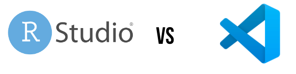

RStudio vs VSCode - Should you switch?
RStudio is the preferred IDE/Editor for running R code for most people, but VSCode has rapidly become one of the most popular code editors for a huge number of other languages. This writeup is for people who are very familiar with RStudio and want to see how the two compare. So, I will not be talking a lot about RStudio because for that reason, but going into the strengths and weaknesses of VSCode compared to RStudio.
Further, I this is a very brief overview comparing the community (free) versions of both editors, I cannot speak to the R-Studio paid editions.
I am a low-intermediate level programmer who doesn’t use R as much as some people do but whenever I do, RStudio is my preferred editor of choice. For everything else (Python, Jupyter, HTML, CSS, JS,etc ), I tend to use VSCode. I tried VSCode for R because I wanted to see if I could use a single code editor for everything I do.
RStudio is an outstanding piece of software and has never given me any major problems during my workflows, this was just an experiement to find a one-size-fits all code editor/IDE.
If you are only interested in my conclusion or the TLDR; :
No, I will not be switching to VSCode for R - FOR NOW. But I love how great R looks and works on it already.
Now that we’re done with that, lets get into some of the details:
Installation
Assuming you already have R installed on your system, Installing VSCode and R is very straightforward;
- download the .pkg or .exe file and install the code editor;
- install the
languageserverpackage for R (install.packages(“languageserver”) - install the R extension from the markeplace (https://marketplace.visualstudio.com/items?itemName=REditorSupport)
and you’re ready to start coding.
Optional: You can install a better terminal alternative like radian, a debugger and a better plotviewer like httpgd because the builtin plotviewer for VSCode isn’t a particualrly good one.
Setting up the editor
You can now start working with code but there are potentially times you could run into errors while running your code.
To eliminate any potential errors/code not work, you must make sure the R path is specified in the VSCode preferences (cmd+shift+p on mac) and search for R path. Finding the path is simple, open R and type: R.home(“bin”) and copy the output path.
Another somewhat major tweak you would want to do to the editor:
Some simple shortcuts like the pipe operator doesn’t work out of the box, so adding a shortcut for “%>%” or “|>” depending on your preference can be done using the following method:
https://stackoverflow.com/questions/58731362/how-do-i-had-an-alias-for-magrittr-pipe-from-r-in-vscode How do I had an alias for magrittr pipe from R in vscode - Stack Overflow
Working with R code
Here is a comparison of my two setups side by side with the same file and environment:


working with R is very similar to a regular RStudio IDE,
R-extension provides the same support for
- installing packages,
- plots and plot viewer
- grobal enviroment
- datasets
- plots
- lists, variables, etc.
- checking loaded packages etc.
Terminal and console position can be modified to make get the input and output panes next to each other, something you cannot do well in R-Studio. So VSCode feels very familiar and running code is highly intuitive.
Running Code
Running a piece of code is again, very similar to RStudio. A run file button is located at the top of the panel and individual lines of code can be run using the cmd+return shortcut on mac. The shortcut can be easily modified similar to how the pipe operator shortcut is modified above.
In terms of running and getting results for plain R code and .R files; VSCode is a great alternative for a lot of people including me. So if you’re like me and you use R mainly for statistical analysis, data visualization and data analysis; give VSCode a try.
Working with Notebooks and Rmd:
This is where VSCode falls so much behind RStudio it becomes a one horse race. The notebook support in VSCode is in a single word - terrible. Running code chunks in a .Rmd notebook feels and looks dated. My existing notebooks created in RStudio were buggy in VSCode despite not showing any errors in RStudio. Creating new notebooks is unintuitive and still a long way behind RStudio in terms of the overall feel to it.
I have searched for solutions, including globally installing pandoc, knitr and rmarkdown etc and trying multiple versions of R and the packages mentioned previously to no avail. This is one of the biggest reasons I am not completely switching to VSCode just yet.
A Note About Quarto
I recently started playing around with Quarto, which looks like the natural successor to Rmarkdown. So far, I have only used Quarto in RStudio and am a big fan of the way it looks and works. I have yet to try it on VSCode, so I cannot comment on it.
What I love about R in VSCode
Speed - VSCode is quick to load up, fast and snappy when the code is running. I did not do any analysis on the times it took to load a piece of code on one vs the other but VSCode ‘feels’ quicker.
One stop shop for R, Python, HTML, CSS, and dozens other languages - and does it much better than RStudio
MULTIPLE R SESSIONS!!! - Such a great feature when you’re trying to develop several related projects at the same time.
Code Refactoring - much better than RStudio
Color picker and color blocksFor people like me who work with a lot of data visualizations, the ability to see the colors and use the color blocks to pick colors seamlessly is a gamechanger.

Language server - document outline - Navigating through a long line of code (and multiple R files) is painless
Intellisense and Code Completion - faster, more user friendly

- Help and documentation: Same information, much more streamlined

Liveshare and working with teams
Code Snippets are easier to use and set up than RStudio
Much easier git and version control integration
Functions are handled brilliantly. Hover over them and you get all kinds of information and callbacks.
Code organization: Code sections allow for folding of code, makes fo easier code reading and naviation and cleaner code overall.

- Customizable and make it your own by editing the json files inside VSCode.
So VSCode has some amazing features that could really tempt an RStudio user.
What I don’t love about R in VSCode
- R-studio works great out of the box, no need to install extensions while VSCode setup for R can be tricky and can sometimes involve trail and error
- R-templates inside R studio are amazing, and easy to find and use
- Dataviewer in RStudio feels a lot better than VScode, especially when working with a large dataset
- Even though I use VSCode for Python, HTML, CSS etc, coding R in it, especially for the first few hours feels very odd and in a way unfamiliar despite the very familiar overall IDE organization
- NOTEBOOK SUPPORT - If you work with rmd more than r, DO NOT SWITCH. Running chunks of code is very clunky and poor
- Knitting notebooks doesnt work well at all, and can lead to errors a lot of the time.
- Plot viewers are still not as good as RStudio
- Terminal will sometimes throw errors in VSCode that you wouldn’t find for the same piece of code in RStudio
- RStudio just feels a lot more tailored to a data scientist/statistical analysis person, while VSCode can feel like a developer-centric code editor
- Feels a lot more tailored to a data scientist/statistical analysis
Things I hope to try soon with VScode
- Quarto
- Rblogdown and Rbookdown
- More Debugging
- Radian terminal
Conclusion
Do I love R in VSCode so far? Absolutely
Enough to make me want to switch? Not yet.
Why? Notebooks
Will I switch soon? Hopefully yes.
If you liked this, and have any suggestions for me; find me on twitter: https://twitter.com/karat_sidhu
Further Reading
- A great video and blog by Kun Ren on the subject : https://youtu.be/9xXBDU2z_8Y
- A blog on the same subject: https://renkun.me/2019/12/11/writing-r-in-vscode-a-fresh-start/
- Running R in VSCode: https://www.infoworld.com/article/3625488/how-to-run-r-in-visual-studio-code.html
- Insalling R in VSCode: https://code.visualstudio.com/docs/languages/r
- Bonus: Quarto vs RMD: https://yihui.org/en/2022/04/quarto-r-markdown/
This writeup is also available on Towards Data Science
VSCode vs RStudio Worth the switch? | Karat Sidhu | Towards Data Science (medium.com)